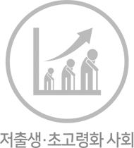
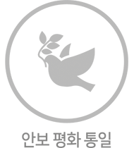
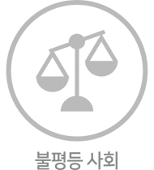
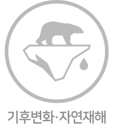
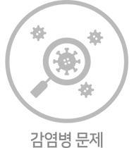

사회과학대학 미래사회 50년 설계기금에 참여하세요!
사회과학대학이 만들 미래 50년, 다양한 전공 영역의 중심에서 연결을 핵심으로 하는 통합학습이 이루어집니다.
급격하게 변화하는 사회환경과 상황에 대응하는 능력을 바탕으로 변화에 적응하고 새로운 미래를 만들어내는 미래 인재를 만들겠습니다.
사회과학대학의 미래 50년과 함께하면 우리 사회가 변화합니다.


기부스토리 업데이트 예정입니다.
OO OOOO한국사회의 성장과 함께 했습니다.
서울대학교 사회과학대학은 1975년, 옛 문리과대학과 상과대학의 일부가 통합되어 출범한 이래 한국 사회의 성장에 중추적인 역할을 수행해왔습니다. 사회과학대학은 한국사회의 민주화와 경제 발전에 주도적으로 기여한 우수한 인재를 배출해왔으며 국내외에서 선도적인 사회과학 연구자를 양성했습니다. 한국 사회의 정치, 경제, 사회, 문화의 성장에 사회과학대학이 함께 했습니다.수월성 교육으로 세계 속의 리더로
사회과학대학은 글로벌 리더십, 사회현실을 분석하고 대안을 제시하는 전문성, 깨어있는 사회 혁신가 양성을 목표로 인재를 양성해왔습니다. 국제적인 수준의 교수진과 창의적인 교육시스템을 통해 최고의 교육환경을 만들어왔습니다. 학생들은 높은 수준의 지식은 물론 통찰력, 책임감, 판단력을 소유한 인재로 성장하여 국내외에서 리더의 역할과 책무를 다하고 있습니다.탁월한 연구로 사회 발전에 기여
사회과학대학은 원천적 지식을 창출하는 기반 연구부터 사회의 다양한 문제를 해결하는 정책 및 제도 연구, 그리고 다학제적 연구에 이르기까지 다양한 스펙트럼의 연구를 수행하고 있습니다. 그 결과 국제적 대학 평가 QS에서 세계 20위권에 해당하는 위치를 꾸준히 유지하 고 있습니다.미래 변화의 시작, 사회과학대학
세계 10위권의 경제대국인 대한민국이 더욱 도약하기 위해서는 미래 사회의 복합적이고 포괄적인 문제들을 해결해야 합니다. 4차 산업혁명으로 특정지어지는 미래 사회를 준비하기 위해서는 전통적인 사회과학의 바탕 위에 데이터사이언스와 AI와 같은 새로운 교육과 연구 혁신이 필요 합니다. 미래의 중심에 서서 사회과학대학이 사회 변화를 이끌어 나가겠습니다.넥스트 50, 사회대의 변화가 시작됩니다.
현재와 미래 사회의 주요 위기 이슈들은 하나의 전공 영역에서 다루어지기 어렵습니다.사회과학대학은 복합적으로 변화하는 현실을 분석, 진단하고 미래 50년의 비전을 제시하겠습니다.
- 
- 
- 
- 
- 
미래교육, 공간의 변화에서 시작됩니다.
AI와 빅데이터가 만들어 내는 초연결 미래 사회는 학생들에게 지금과는 현저히 다른 역량을 요구 할 것입니다.이러한 미래 역량을 적극적으로 계발하기 위해서는 학교 공간 역시 미래지향적으로 새롭게 설계되어야 합니다.
공간부터 혁신해야 교육이 새로워집니다.
학교는 대면/비대면의 경계가 없는 상시적 네트워크 공간으로 작동해야 합니다. 미래 학교 공간은 학습자-교수자의 네트워크의 중심이어야 함은 물론, 개인이 생애를 설계하고 사회와 소통할 수 있는 성장의 공간이어야 합니다.
Zoom
{kind=link}
{kind=link}
{kind=link}